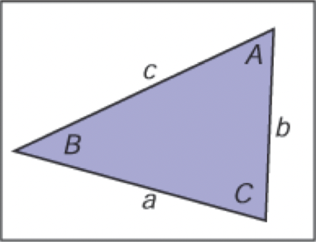

前言
本版本的《计算机图形学基础》包括对阴影着色、光线反射和路径追踪等材料的大量重写，以及对全书的许多校正。本书对基于物理的材料和基于物理的渲染等技术进行了更好的介绍，这些技术在实际应用中逐渐占据主导地位。现在这些材料得到更好的整合，我们认为这本书很好地匹配了目前许多教师组织图形课程的方式。
本书的组织结构与第四版基本相似。在多年来对本书进行修订的过程中，我们努力保留了早期版本中非正式的、直观的表述风格，同时也提高了本书的一致性、准确性和完整性。我们希望读者会发现，这本书是一个吸引人的平台，适合于各种计算机图形学课程。
关于封面
封面图片来自 J.W.Baker 的《水中之虎》（画布上的拉丝和喷枪亚克力，16英寸×20英寸），www.jwbart.com。
老虎的主题是指 Alain Fournier（1943-2000）1998年在康奈尔大学的一次研讨会上的精彩演讲。他的演讲是对老虎动作进行的令人回味的口头描述。他总结了自己的观点：
尽管在过去的35年里，计算机图形学的建模和渲染已经有了巨大的进展，但我们仍然无法自动模拟在河中游泳的老虎的所有精彩细节。我所说的自动是指不需要艺术家或专家进行仔细的手动调整的方式。
坏消息是，我们还有很长的路没走。
好消息是，我们还有很长的路要走。
在线资源
本书的网址是 http://www.cs.cornell.edu/~srm/fcg5/ 。我们将继续维护本书的勘误表和课程链接，以及与本书风格相符的教学材料。本书中的大多数图片都是 Adobe Illustrator 格式的，我们很乐意根据需要将特定图片转换为可移植格式。请随时通过 srm@cs.cornell.edu 或 ptrshrl@gmail.com 与我们联系。
致谢
以下人士提供了本书各版本的有用信息、评论或者反馈：Ahmet O˘guz Aky¨uz, Josh Andersen, Beatriz Trinch˜ao Andrade Zeferino Andrade, Bagossy Attila, Kavita Bala, Mick Beaver, Robert Belleman, Adam Berger, Adeel Bhutta, Solomon Boulos, Stephen Chenney, Michael Coblenz, Greg Coombe, Frederic Cremer, Brian Curtin, Dave Edwards, Jonathon Evans, Karen Feinauer, Claude Fuhrer, Yotam Gingold, Amy Gooch, Eungyoung Han, Chuck Hansen, Andy Hanson, Razen Al Harbi, Dave Hart, John Hart, Yong Huang, John “Spike” Hughes, Helen Hu, Vicki Interrante, Wenzel Jakob, Doug James, Henrik Wann Jensen, Shi Jin, Mark Johnson, Ray Jones, Revant Kapoor, Kristin Kerr, Erum Arif Khan, Mark Kilgard, Fangjun Kuang, Dylan Lacewell, Mathias Lang, Philippe Laval, Joshua Levine, Marc Levoy, Howard Lo, Joann Luu, Mauricio Maurer, Andrew Medlin, Ron Metoyer, Keith Morley, Eric Mortensen, Koji Nakamaru, Micah Neilson, Blake Nelson, Michael Nikelsky, James O’Brien, Hongshu Pan , Steve Parker, Sumanta Pattanaik, Matt Pharr, Ken Phillis Jr, Nicol`o Pinciroli, Peter Poulos, Shaun Ramsey, Rich Riesenfeld, Nate Robins, Nan Schaller, Chris Schryvers, Tom Sederberg, Richard Sharp, Sarah Shirley, Peter-Pike Sloan, Hannah Story, Tony Tahbaz, JanPhillip Tiesel, Bruce Walter, Alex Williams, Amy Williams, Chris Wyman, Kate Zebrose, and Angela Zhang。
Ching-Kuang Shene 和 David Solomon 允许我们借用他们的例子。 Henrik Wann Jensen、Eric Levin、Matt Pharr 和 Jason Waltman 慷慨地提供了图片。 Brandon Mansfield 帮助改进了关于光线追踪的分层包围体的探讨。 Philip Greenspun (philip.greenspun.com) 热心地允许我们使用他的照片。 John “Spike” Hughes 帮助改进了对抽样理论的探讨。 Wenzel Jakob 的 Mitsuba 渲染器在创建许多图形方面非常宝贵。我们非常感谢 J.W. Baker 帮助创作了 Pete 设想的封面。他除了是一位才华横溢的艺术家之外，也是一位非常愉快的工作伙伴。
本书的章节注释中引用了许对编写本书有帮助的著作。然而，有几本影响了本书内容和表现形式的关键文献值得在此特别表彰。其中包括两本经典的计算机图形学教材，我们都是从这两本教材中学习的基础知识——《计算机图形学：原理与实践》（Foley、Van Dam、Feiner 和 Hughes，1990 年）和《计算机图形学》（Hearn 和 Baker，1986 年）。其他文本包括 Alan Watt 的两本有影响力的书籍 (Watt, 1993, 1991), Hill的《使用OpenGL的计算机图形》(Francis S. Hill, 2000), Angel的《交互式计算机图形学：使用 OpenGL 的自上而下方法》(Angel, 2002), Hugues Hoppe 的华盛顿大学论文 (Hoppe, 1994) 和 Rogers 的两篇优秀的图形学文章 (D. F. Rogers, 1985, 1989)。
我们要特别感谢 Alice 和 Klaus Peters 鼓励 Pete 撰写本书的第一版，感谢他们在帮助完成本书制作的伟大才能。他们对作者的耐心以及竭尽所能奉献于使本书成为最好的书籍，这对本书的出版起了重要的作用。如果没有他们的非凡努力，这本书肯定不会存在。
Steve Marschner，伊萨卡，纽约
Peter Shirley，盐湖城，犹他州
2021年2月
作者
Steve Marschner是康奈尔大学的计算机科学教授。他于1993年在布朗大学获得理学学士学位，1998年在康奈尔大学获得博士学位。在2002年加入康奈尔大学之前，他在微软研究院和斯坦福大学担任研究职务。他是2015年SIGGRAPH计算机图形学成就奖的获得者和2003年技术学院奖的共同获得者。
Peter Shirley是英伟达公司的杰出研究科学家。他曾在印第安纳大学、康奈尔大学和犹他大学担任学术职务。他于1985年获得里德学院的物理学学士学位，1991年获得伊利诺伊大学的计算机科学博士学位。
介绍
计算机图形学这个术语描述了任何使用计算机来创建和操纵图像的情况。本书介绍了可用于创建各种图像的算法和数学工具——逼真的视觉效果、内容丰富的技术插图或精美的计算机动画。图形可以是二维的，也可以是三维的；图像可以是完全合成的，也可以是通过处理照片产生的。本书是关于基本算法和数学的，特别是那些用于制作三维物体和场景的合成图像的算法。
实际上，做计算机图形不可避免地需要了解特定的硬件、文件格式，通常还需要一个或两个图形API（参见1.3节）。计算机图形学是一个快速发展的领域，因此这些知识的具体内容是在不断更新变化。因此，在本书中，我们尽力避免依赖任何特定的硬件或API。我们鼓励读者用他们的软件和硬件环境的相关文档来补充此文本。幸运的是，计算机图形文化有足够的标准术语和概念，本书的讨论应能很好地反映到大多数环境。
本章定义了一些基本术语，并提供了一些历史背景，以及与计算机图形相关的信息来源。
图形学领域
对任何领域强加分类都是危险的，但大多数图形从业者会对计算机图形的以下主要领域达成一致:
- 建模涉及的是形状和外观属性的数学规范化，这种方式可以存储在计算机上。例如，可以将咖啡杯描述为一组有序的三维点，以及一些连接这些点的插值规则和一个描述光线如何与杯子作用的反射模型。
- 渲染是一个从艺术中继承下来的术语，涉及到从三维计算机模型创建阴影图像。
- 动画是一种通过图像序列创造运动幻觉的技术。动画使用建模和渲染，但增加了随着时间移动的关键问题，这在基本的建模和渲染中通常无法处理。
还有许多其他涉及计算机图形的领域，关于它们是否属于图形学的核心领域，仁者见仁，智者见智。这些内容在本书都至少有所提及。此类相关领域包括以下内容：
- 用户接口涉及输入设备，例如鼠标和平板电脑、应用程序、图像对用户的反馈以及其他感官反馈的接口。从历史上看，该领域与图形有关，主要是因为计算机图形的研究人员最早接触到了现在无处不在的输入和输出设备。
- 虚拟现实试图让用户沉浸在一个三维虚拟世界中。这通常要求至少有立体图形和对头部运动的反应。对于真正的虚拟现实，还应该提供声音和力量的反馈。因为这一领域需要先进的三维图形和先进的显示技术，所以它通常与图形学密切相关。
- 可视化试图通过视觉显示让用户深入了解复杂的信息。通常，在一个可视化问题中，有一些图形问题需要解决。
- 图像处理涉及对二维图像的操作，在图形和视觉领域均有应用。
- 三维扫描使用测距技术来创建被评估的三维模型。这类模型对于创造丰富的视觉图像很有帮助，而处理这种模型往往需要图形算法。
- 计算摄影是使用计算机图形、计算机视觉和图像处理方法，以实现拍摄物体、场景和环境的新方法。
主要应用
几乎任何工作都可以在一定程度上使用计算机图形，但计算机图形技术的主要消费者包括以下行业：
- 视频游戏越来越多地使用复杂的三维模型和渲染算法。
- 卡通片通常是直接由三维模型渲染。许多传统的二维卡通片使用由三维模型的背景渲染，这使得连续移动的视角不需要大量花费艺术家时间。
- 视觉效果几乎使用了所有类型的计算机图形技术。几乎每部现代电影都使用数字合成技术，将背景与单独拍摄的前景叠加。许多电影还使用三维建模和动画来创造合成环境、物体甚至人物，而大多数观众都不会怀疑这不是真的。
- 动画片使用了许多与视觉效果相同的技术，但不一定要追求图像的真实性。
- CAD/CAM是指计算机辅助设计和计算机辅助制造。这些领域利用计算机技术在计算机上设计零件和产品，然后利用这些虚拟设计来指导制造过程。例如，许多机械零件是在三维计算机建模软件包中设计的，然后在计算机控制的铣削设备上自动生产。
- 仿真可以被认为是精确的视频游戏。例如，飞行模拟器使用复杂的三维图形来模拟驾驶飞机的体验。这样的模拟对于安全关键领域的初始培训，例如驾驶汽车，以及对于有经验的用户的场景培训都是非常有用的，如在实际操作中成本太高或太危险的特定灭火情况。
- 医学影像为扫描的病人数据创建有意义的图像。例如，计算机断层扫描（CT）数据集是由密度值的大型三维矩形阵列组成。计算机图形被用来创建阴影图像，帮助医生从这些数据中提取最突出的信息。
- 信息可视化创造的数据图像不一定具有“自然”的视觉描述。例如，十只不同股票价格的时间趋势没有明显的视觉描述，但巧妙的图形技术可以帮助人类看到这些数据的模式。
图形API
使用图形库的一个关键部分是处理图形API。应用程序接口（API）是执行一系列相关操作的标准函数集合，而图形API是执行如将图像和三维表面绘制到屏幕上的窗口等基本操作的函数集合。
每个图形程序都需要能够使用两个相关的API：一个图形API用于视觉输出，一个用户界面API用于从用户那里获得输入。目前有两种主流的图形和用户界面API范式。第一种是集成的方法，以Java为例，其中图形和用户界面工具包是集成的、可移植的包，作为语言的一部分得到完全的标准化和支持。第二种是以Direct3D和OpenGL为代表的，其中绘图命令是与C++等语言相联系的软件库的一部分，而用户界面软件是一个独立的实体，可能因系统而异。在后一种方法中，编写可移植的代码是有问题的，尽管对于简单的程序，可能会使用可移植的库层来封装系统特定的用户界面代码。
无论你选择什么样的API，基本的图形调用将大致相同，而且本书的概念也适用。
图形管道
现在的每台台式电脑都有一个强大的三维图形管道。这是一个特殊的软件/硬件子系统，可以有效地绘制透视的三维图元。通常，这些系统针对处理具有共享顶点的三维三角形进行了优化。管道中的基本操作是将三维顶点位置映射到二维屏幕位置，并对三角形进行着色，以使它们看起来既逼真又以适当的从后到前（back-to-front）的顺序出现。
尽管按照有效的从后到前顺序绘制三角形曾经是计算机图形学中最重要的研究问题，但现在几乎都是用z-buffer来解决，它使用一个特殊的内存缓冲区，以蛮力的方式解决问题。
事实证明，图形管道中使用的几何操作几乎可以完全在四维坐标空间中完成，该空间由三个传统的几何坐标和第四个有助于透视的齐次坐标组成。这些四维坐标是用4×4矩阵和4矢量来操作的。因此，图形管道包含了许多有效处理和合成这些矩阵和矢量的机制。这种四维坐标系是计算机科学中最微妙和美丽的结构之一，无疑也是学习计算机图形学时需要跨越的最大智力障碍。每本图形学书籍的第一部分都有很大一部分是关于这些坐标的。
生成图像的速度在很大程度上取决于绘制三角形的数量。因为在许多应用中，交互性比视觉质量更重要，所以尽量减少用于表示模型的三角形数量是值得的。此外，如果从远处看模型，需要的三角形数量比从近处看模型时少。这表明，使用不同的细节级别（LOD）来表示一个模型是很有用的。
数值问题
许多图形程序实际上只是三维数字代码。数字问题在这类程序中往往是至关重要的。在 "过去"，要以稳健和可移植的方式处理这些问题是非常困难的，因为机器对数字有不同的内部表示，更糟糕的是，处理异常的方式也不尽相同，互不兼容。幸运的是，几乎所有的现代计算机都符合IEEE浮点数标准（IEEE标准协会，1985）。这允许程序员对处理某些数字条件做出许多方便的假设。
尽管IEEE浮点数具有很多在编码数值算法时很有价值的特性，但对于图形中遇到的大多数情况只有少数几个特性是至关重要的。首先，也是最重要的是要了解IEEE浮点数运算中实数的三个"特殊 "值。
- 正无穷（\(\infty\)）。这是一个比其他所有有效数字都大的有效数字。
- 负无穷（\(-\infty\)）。这是一个比其他所有有效数字都小的有效数字。
- 非数字（\(\mathrm{NaN}\)）。这是一个无效的数字，是由一个具有不确定后果的操作产生的，如0除以0。
IEEE浮点数的设计者做出了一些对程序员来说非常方便的决定。其中许多与上述三个处理异常的特殊值有关，比如除以零。在这些情况下，异常会被记录下来，但在很多情况下，程序员可以忽略它。具体来说，对于任何正实数a，以下涉及除以无穷数的规则都是成立的：
\[ \begin{aligned} &+a /(+\infty)=+0 \\ &-a /(+\infty)=-0 \\ &+a /(-\infty)=-0 \\ &-a /(-\infty)=+0 \end{aligned} \]
其他涉及无穷数的运算的行为与人们所期望的一样。同样对于正a，其行为如下：
\[ \begin{aligned} \infty+\infty &=+\infty \\ \infty-\infty &=\mathrm{NaN} \\ \infty \times \infty &=\infty \\ \infty / \infty &=\mathrm{NaN} \\ \infty / a &=\infty \\ \infty / 0 &=\infty \\ 0 / 0 &=\mathrm{NaN} \end{aligned} \]
布尔表达式中涉及无穷数的规则与预期一致：
- 所有有限的有效数字都小于\(+\infty\)。
- 所有有限的有效数字都大于\(-\infty\)。
- \(-\infty\)小于\(+\infty\)。
涉及NaN值的表达式规则比较简单：
- 任何包括\(\mathrm{NaN}\)的算术表达式的结果都是\(\mathrm{NaN}\)。
- 任何涉及\(\mathrm{NaN}\)的布尔表达式都是假的。
也许IEEE浮点数最有用的地方在于如何处理除以零的问题；对于任何正实数\(a\)，以下涉及除以零值的规则都成立：
\[ \begin{aligned} +a /+0=+\infty， \\ -a /+0=-\infty。 \end{aligned} \]
如果程序员使用IEEE规则，那么许多数字计算会变得更加简单。例如，考虑表达式：
\[a=\frac{1}{\frac{1}{b}+\frac{1}{c}}\]
这种表达方式出现在电阻和透镜上。如果除以0会导致程序崩溃（在IEEE浮点数之前的许多系统中都是如此），那么就需要两个\(\text{if}\)语句来检查\(b\)或\(c\)的小值或零值。相反，在IEEE浮点数中，如果\(b\)或\(c\)为零，我们会如愿获得\(a\)的零值。另一种避免特殊检查的常用技术是利用\(\mathrm{NaN}\)的布尔特性。请看下面的代码段：
\[ \begin{aligned} &a=f(x) \\ &\textbf{if}(a>0) \ \textbf{then} \\ &\quad do \ something \end{aligned} \]
在这里，函数f可能会返回 "丑陋 "的值，如∞或NaN，但if条件仍然是明确的：当\(a=\mathrm{NaN}\)或\(a=-\infty\)时为假，\(a=+\infty\)为真。在决定返回哪些值时要小心，通常if可以做出正确的选择，而不需要特别的检查。这使得程序更小、更健壮、更高效。
效率
并没有什么神奇的规则能够使代码更加高效。高效性是通过仔细的权衡来实现的，而这些权衡对于不同的架构是不同的。然而，在可预见的未来，一个好的启发式方法是，程序员应该更多地关注内存访问模式而不是操作数。这与20年前的最佳启发式方法相反。出现这种转变是因为内存的速度没有跟上处理器的速度。由于这一趋势仍在继续，有限和连贯的内存访问对优化的重要性应该只会增加。
一个合理的使代码快速化的方法是按以下顺序进行，只采取那些需要的步骤：
- 尽可能以最直接的方式编写代码。根据需要即时计算中间结果而不是存储它们；
- 在优化模式下进行编译；
- 使用现有的任何分析工具来找到关键瓶颈；
- 检查数据结构以寻找改善局部性的方法。如果可能，使数据单元大小与目标架构上的缓存/页面大小相匹配；
- 如果分析揭示了数值计算的瓶颈，请检查编译器生成的汇编代码是否存在效率缺失。重写源代码以解决发现的任何问题。
在这些步骤中最重要的是第一个步骤。大多数的 "优化 "使代码更难读，但却没有加快速度。此外，前期花在优化代码上的时间通常更适合用来纠正错误或增加功能。另外，要注意旧文本中的建议；一些经典的技巧，如使用整数而不是实数，可能不再产生速度，因为现代的CPU通常在执行浮点数操作时像执行整数操作一样快。在所有情况下都应该进行分析，以确定任何优化对特定机器和编译器的好处。
图形程序设计和编码
某些常见的策略在图形编程中经常是有用的。在本节中，我们提供了一些建议，当你实现本书所学的方法时，你可能会发现这些建议很有帮助。
类型设计
任何图形程序的一个关键部分是为几何实体（如向量和矩阵）以及图形实体（如RGB颜色和图像）提供良好的类或例程。这些例程应该尽可能的简洁和高效。一个普遍的设计问题是，位置和位移是否应该成为独立的类别，因为它们有不同的操作；例如，一个位置乘以二分之一没有几何意义，而位移的二分之一却有意义（Goldman, 1985; DeRose, 1989）。在这个问题上几乎没有一致的意见，这可能会在图形从业者中引发数小时的激烈争论，但为了举例说明，我们假设不做这种区分。
我坚信KISS（"保持简单，愚蠢"）原则，从这个角度来看，两个类的论点并不令人信服，不足以证明增加的复杂性。-P.S.
我喜欢把指针和向量分开，因为它使代码更易读，并能让编译器捕捉到一些错误。-S.M.
这意味着要编写的一些基本类型包括：
-
一个二维矢量类，用于存储x-和y-分量。它应该将这些分量存储在一个长度为2的数组中，这样就可以很好地支持一个索引操作。你还应该包括矢量加法、矢量减法、点积、交叉积、标量乘法和标量除法的操作。
-
三维向量（vector3）。一个类似于二维向量的三维向量类型。
-
h向量（hvector）。一个有四个分量的同质向量（见第8章）。
-
rgb。每种RGB颜色存储三个成分。你还应该包括RGB加法、RGB减法、RGB乘法、标量乘法和标量除法的操作。
-
变换。一个用于变换的4×4矩阵。你应该包括一个矩阵乘法和成员函数来应用于位置、方向和表面法向量。如第七章所示，这些都是不同的。
-
图像。一个具有输出操作的RGB像素的二维数组。
此外，你可能想或不想为时间间隔、正交基和坐标系添加类型。
你也可以考虑为单位长度的向量建立一个特殊的类型，尽管我发现它们比价值更痛苦。-P.S.
单精度与双精度浮点数（Float vs. Double）
现代架构表明，减少内存的使用和保持内存访问的连贯性是实现高效的关键。这建议使用单精度数据。然而，为了避免数字问题，建议使用双精度算术。这方面的权衡取决于程序，但在类型的定义中能有一个默认值是很好的。
我建议在几何计算中使用双精度浮点数，在颜色计算中使用单精度。对于占据大量内存的数据，如三角形网格，我建议存储单精度数据，但当通过成员函数访问数据时，要转换为双精度。-P.S.
调试图形程序
如果你四处打听可能会发现，随着程序员经验的增加，他们越来越少地使用传统的调试器。其中一个原因是，对于复杂的程序来说，使用这样的调试器相比较简单的程序在使用时更加困难。另一个原因是，最严重的错误是概念上的错误，即实现了错误的东西，很容易浪费大量的时间在变量值上，而不能检测到这种情况。我们发现有几种调试策略对图形学特别有用。
我主张所有的计算都使用单精度浮点数，直到发现在代码的特定部分存在需要双精度的证据。-S.M.
科学的方法
在图形程序中，有一种替代传统调试的方法，往往非常有用。它的缺点在于它与计算机程序员在职业生涯早期被教导不要做的事情非常相似，所以如果你这样做可能会觉得 "很调皮"：我们创建一个图像，观察它有什么问题。然后，我们对导致问题的原因提出一个假设，并对其进行测试。例如，在一个光线追踪程序中，我们可能会有许多看起来有些随机的暗色像素。这是典型的 "阴影痤疮 （shadow acne)"问题，大多数人在编写光线追踪程序时都会遇到。传统的调试在这里是没有用的，相反，我们必须意识到阴影光线是打在被着色的表面上的。我们可能会注意到，黑点的颜色是环境色，所以直接照明是缺失的。直接照明可以在阴影中被关闭，所以你可以假设这些点被错误地标记为在阴影中，而它们不是。为了测试这个假设，我们可以关闭阴影检查并重新编译。这将表明这些是错误的阴影测试，我们可以继续我们的探测工作。这种方法有时可以成为很好的实践的关键原因是，我们从来不需要发现一个错误的值，或者真正明确我们的概念错误。相反，我们只是通过实验缩小了我们的概念性错误。通常情况下，只需要几次试验就可以追踪到事情的真相，这种类型的调试是很愉快的。
图像作为编码调试的输出
在许多情况下，从图形程序中获得调试信息的最简单渠道是输出图像本身。如果你想知道某个变量在每个像素上的部分计算值，你可以临时修改你的程序，把这个值直接复制到输出图像上，而跳过通常要进行的其他计算。例如，如果你怀疑表面法线导致了阴影的问题，你可以直接将法向量复制到图像上（x转为红色，y转为绿色，z转为蓝色），结果就是在计算中实际使用的向量的颜色编码图。或者，如果你怀疑某个特定的值有时超出了它的有效范围，让你的程序在发生这种情况的地方使用鲜红色的像素。其他常见的技巧包括用明显的颜色画出表面的反面（当它们不应该是可见的），用物体的ID数字给图像着色，或者用像素的计算量来着色。
使用调试器
在有些情况下，特别是当科学方法似乎导致了不一致时，观察到底发生了什么是无可替代的。问题是，图形程序往往涉及多次执行相同的代码（例如，每个像素一次，或每个三角形一次），这导致从一开始就在调试器中逐步执行是完全不现实。而且，最困难的错误通常只发生在复杂的输入上。
一个有用的方法是为这个错误 "设置一个陷阱"。首先，确保你的程序是确定性的--在单线程中运行，并确保所有的随机数都是由固定的种子计算出来的。然后，找出表现出错误的像素或三角形，并在你怀疑不正确的代码前添加一个声明，只对可疑情况执行。例如，如果你发现像素(126, 247)出现了错误，那么就添加
\[ [ \begin{aligned} &\textbf{if}\ x=126 \ and\ y=247 \ \textbf{then} \\ &\quad \text{print\ ``blarg!"} \end{aligned} ] \]
使用固定的随机数种子的特殊调试模式很有用。
如果你在打印语句上设置一个断点，你就可以在你感兴趣的像素被计算出来之前进入调试器。有些调试器有一个 "条件断点 "功能，可以在不修改代码的情况下达到同样的效果。
在程序崩溃的情况下，传统的调试器对于确定崩溃的地点很有用。然后你应该在程序中开始回溯，使用断言和重新编译从而找出程序出错的地方。这些断言应该被留在程序中，以备将来可能出现的错误。这再次意味着要避免传统的一步到位的过程，因为这样就不会在程序中加入有价值的断言。
调试数据的可视化
通常情况下，我们很难理解你的程序在做什么，因为它在最终出错之前计算了大量的中间结果。这种情况类似于测量大量数据的科学实验，有一个解决办法是一样的：为自己制作好的图表和插图以了解数据的含义。例如，在光线追踪器中，你可能会编写用于将光线树可视化的代码，这样你就可以看到哪些路径对一个像素的贡献，或者在图像重采样程序中，你可能会做一些图来显示所有从输入中提取样本的点。花费时间编写代码来可视化程序的内部状态，也将在你优化它的时候，通过更好地理解它的行为作为回报。 我喜欢把调试打印的语句格式化，这样输出的结果恰好是一个MATLAB！或Gnuplot脚本，可以做出有帮助的图。-S.M.
说明
关于软件工程的讨论受到Effective C++系列（Meyers, 1995, 1997）、极限编程运动（Beck & An-dres, 2004）和The Practice of Programming（Kernighan & Pike, 1999）的影响。关于实验性调试的讨论是基于与Steve Parker的讨论。
有许多与计算机图形学有关的年度会议，包括ACM SIGGRAPH和SIGGRAPH Asia、Graphics Interface、Game Developers Conference（GDC）、Eurographics、Pacific Graphics、High Performance Graphics、Eurographics Symposium on Rendering以及IEEE VisWeek。通过网络搜索，可以很容易找到这些会议的名称。
各种数学知识
图形学的大部分内容只是将数学直接翻译成代码。数学越干净，产生的代码就越干净；所以本书的大部分内容都集中在使用正确的数学来完成工作。本章回顾了高中和大学数学中的各种工具，旨在更多地作为参考，而不是作为一个教程。本章可能看起来是一个主题的大杂烩，事实上也是如此；每个主题的选择是因为它在 "标准 "数学课程中的略微不寻常，因为它在图形中具有核心的重要性，或者因为它通常不是从几何学的角度来处理。除了对本书所使用的符号进行回顾外，本章还强调了标准本科课程中有时会跳过的几个要点，如三角形的重心坐标。本章无意于对材料进行严格的处理；相反，强调直觉和几何解释。对线性代数的讨论被推迟到第六章讨论矩阵变换之前。我们鼓励读者浏览本章，以熟悉所涉及的主题，并在需要时参考本章。本章末尾的练习可能有助于确定哪些主题需要复习。
集合和映射
映射，也叫函数，是数学和编程的基础。像程序中的函数一样，数学中的映射需要同一个类型的参数，并将其映射到（返回）一个特定类型的对象。在程序中，我们说的是 "类型"；在数学中，我们要确定集合。当我们有一个对象是一个集合的成员时，我们使用∈符号。比如说，
a ∈ S，
可以理解为 "a是集合S的成员"。给定任何两个集合A和B，我们可以通过两个集合的笛卡尔积来创建第三个集合，表示为A×B。这个集合A×B由所有可能的有序对（a，b）组成，其中a∈A和b∈B。作为缩写，我们用符号A^2表示A×A。我们可以扩展笛卡尔积，从三个集合中创建一个所有可能的有序三元组集合，以此类推，从任意多的集合中创建任意长的有序元组。
常见的关注点包括：
- \(\mathbb{R}\)——实数；
- \(\mathbb{R^+}\)——非负实数（包括0）；
- \(\mathbb{R}^2\)——真实二维平面中的有序对；
- \(\mathbb{R}^n\)——n维迪卡尔空间中的点；
- \(\mathbb{Z}\)——整数；
- \(S^2\)——单位球面上的三维点（R^3中的点）的集合。
请注意，虽然S^2是由嵌入三维空间的点组成的，但它是在一个可以用两个变量进行参数化的表面上，所以它可以被认为是一个二维集合。对映射的记号使用箭头和冒号，例如，
\[ f : \mathbb{R} \mapsto \mathbb{Z}, \]
你可以把它理解为 "有一个叫做f的函数，它把一个实数作为输入，并把它映射成一个整数。" 这里，箭头前面的集合被称为函数的域，右边的集合被称为目标。计算机程序员可能更愿意使用下面等价的语句。"有一个叫f的函数，它有一个实数参数，返回一个整数"。换句话说，上面的集合符号等同于常见的编程符号： \[ \text{integer} \ f(\text{real}) \leftarrow \text{equivalent} \rightarrow f : \mathbb{R} \mapsto \mathbb{Z}。 \] 因此，冒号符号可以被认为是一种编程语法。就是这么简单。
点f(a)被称为a的映像，一个集合A（定义域的子集）的映像是目标映像的子集，包含A中所有点的映像。整个定义域的映像被称为函数的值域。
逆向映射
如果我们有一个函数f : A->B，可能存在一个反函数f^-1 : B->A，它的定义是当b = f ( a )时，f^-1 ( b ) = a 。这个定义只有在每个b \in B都是f下某个点的图像（即范围等于目标），并且只有一个这样的点（即只有一个a，f(a)=b）时才有效。这样的映射或函数被称为双投。双投将每一个a E A映射到一个唯一的b E B，对于每一个b E B，正好有一个a E A，使f(a)=b（图2.1）。一组骑手和马匹之间的双射关系表明，每个人都骑着一匹马，每匹马都被骑着。这两个函数是骑手（马）和马（骑手），它们是彼此的反函数。不是双射的函数没有反函数（图2.2）。

图2.1：一个双射 \(f\) 和反函数 \(f^{-1}\)。注意，\(f^{-1}\)也是一个双射。

图2.2：函数 \(g\) 不具有反函数，因为\(\textbf{d}\)中的两个元素匹配到\(\textbf{E}\)中相同的元素。函数 \(h\) 没有反函数因为\(\textbf{F}\)中的元素 \(T\) 在\(\textbf{d}\) 中没有匹配的元素。
一个双射的例子是 \(f : \mathbb{R} \mapsto \mathbb{R}\)，其中 \(f(x) = x^3\)。它的反函数为 \(f^{-1}(x) = \sqrt[3]{x}\) 。这个例子表明，标准的符号可能有些笨拙，因为 \(x\) 在 \(f\) 和 \(f^{-1}\) 中都被用作虚拟变量。有时使用不同的虚拟变量会更直观，\(y = f(x)\)，\(x=f^{-1}(y)\)。这就产生了更直观的 \(y = x^3\) 和 \(x = \sqrt[3]{y}\)。一个没有反函数的例子是 \(sqr : \mathbb{R} \mapsto \mathbb{R}\)，其中 \(sqr(x) = x^2\)。它不具有反函数的原因包括两个：首先 \(x^2 = (-x)^2\)，其次域中没有成员映射到目标的负数部分。请注意，如果我们把域和范围限制在 \(\mathbb{R^+}\)，可以定义一个反函数。那么 \(\sqrt{x}\) 是一个有效的反函数。
区间
通常情况下，我们希望指定一个函数处理的是数值受限的实数。这样的一个约束就是指定一个区间。区间的一个例子是零和一之间的实数，不包括零或一。我们把它表示为 \((0,1)\)。因为它不包括其端点，所以被称为开区间。相应的闭区间，包含其端点，用方括号表示： \([ 0 , 1 ]\) 。这种符号可以混合使用；即 \([0,1)\) 包括零，但不包括一。当写一个区间 \([a,b]\) 时，我们假定 \(a \leq b\)。表示一个区间的三种常见方法如图2.3所示。区间的笛卡尔积经常被使用。例如，为了表示点 \(x\) 在三维的单位立方体中，我们说\(x \in [0, 1]^3\)。

图2.3：三个表示等效方式用于表示区间从 \(a\) 到 \(b\)，包含 \(b\) 但不包含 \(a\)
区间在与集合运算的结合中特别有用：交集、并集和差集。例如，两个区间的交集是它们共同点的集合。符号 \(\cap\) 用来表示交集。例如，\([3,5) \cap [4,6] = [4,5)\)。而并集，使用符号 \(\cup\) 用来表示任何一个区间内的点。例如，\([3,5) \cup [4,6] = [3,6]\)。与前两个运算符不同，差集运算符根据参数顺序产生不同结果。减号用于差集运算，它返回左侧区间中不在右侧区间的点。例如，\([3,5) - [4,6] = [3,4]\)，以及 \([4,6] - [3,5] = [5,6]\)。这些操作用区间图特别容易直观地表现出来（图2.4）。
图2.4：在 \([3,5)\) 和 \([4,6]\) 上的区间操作
对数函数
虽然当前不像计算器出现之前那样普遍，但对数通常在具有指数项的方程问题中很有用。根据定义，每个对数都有一个底 \(a\)。以 \(a\) 为底的对数 \(x\) 通常被写作 \(\log_ax\)，并且它被定义为若要得到 \(x\) 需要将 \(a\) 乘幂的指数值。即，
\[y = \log_ax \iff a^y = x. \]
请注意，以 \(a\) 为底数的对数和将 \(a\) 乘幂的函数是互逆的。这个基本定义导致几个后果：
\[ \begin{aligned} a^{\log_a(x)} &= x; \\ \log_a(a^x) &= x; \\ \log_a(xy) &= \log_ax+\log_ay; \\ \log_a(x/y) &= \log_ax-\log_ay; \\ \log_ax &= \log_ab\log_bx. \end{aligned} \]
当我们将微积分应用于对数时，经常会出现特殊数字 \(e=2.718...\)。以 \(e\) 为底的对数被称为自然对数。我们采用常用的简写 \(ln\) 来表示：
\[\ln x \equiv \log_ex.\]
请注意，“ \(\equiv\) ”符号可以被理解为“根据定义恒等”。像 \(\pi\) 一样，特殊数字 \(e\) 出现在很多情况下。除了 \(e\) 以外，在许多领域还使用特定的技术进行操作，并在其符号中省略基数，即 \(\log x\)。例如，天文学家经常使用以十为底，理论计算机科学家经常使用以二为底。由于计算机图形学借鉴了许多领域的技术，我们将避免这种缩写。
对数和指数的导数阐明了为什么自然对数是“自然的”：
\[ \begin{aligned} \frac{d}{d x} \log _{a} x &=\frac{1}{x \ln a} \\ \frac{d}{d x} a^{x} &=a^{x} \ln a \end{aligned} \]
上面的常数乘数只有在 \(a = e\) 时才是是统一的。
求解二次方程
一个二次方程满足如下格式
\[Ax^2+Bx+C=0,\]
其中 \(x\) 是一个未知的实数，并且 \(A\)、\(B\) 和 \(C\) 是已知的常数。如果你想到 \(y=Ax^2+Bx+y\) 的二维 \(xy\) 图，那么解就是任何 \(x\) 值在 \(y\) 中的“零交叉”。因为 \(y=Ax^2+Bx+y\) 是一条抛物线，根据抛物线是否未相交、相切或相交于 \(x\) 轴，将有零个、一个或两个实数解（图2.5）。

图2.5：二次方程根的几何解释是抛物线与 \(x\) 轴的交点。
为了分析解决一元二次方程，我们先除以A：
\[x^2+\frac{B}{A} x+\frac{C}{A}=0\]
然后，我们“完成平方”来分组：
\[\left(x+\frac{B}{2 A}\right)^{2}-\frac{B^{2}}{4 A^{2}}+\frac{C}{A}=0\]
将常数部分移到右边，然后取平方根，得到：
\[ x+\frac{B}{2 A}=\pm \sqrt{\frac{B^{2}}{4 A^{2}}-\frac{C}{A}} . \]
从两边减去 \(\frac{B}{2 A}\)，然后用分母 \(2A\) 分组，就得到了我们熟悉的形式1:
一个稳健的实现将使用等价表达式 \(2 C /\left(-B \mp \sqrt{B^{2}-4 A C}\right)\) 来计算其中一个根，这取决于B的符号（练习7）。
\[ \begin{equation} x=\frac{-B \pm \sqrt{B^{2}-4 A C}}{2 A} . \end{equation} \]
这里，“\(\pm\)”符号意味着有两个解决方案，一个是正号，一个是负号。因此，\(3\pm1\) 等于 “两个或四个”。请注意，决定解数量的项是：
\[ D \equiv B^{2}-4 A C \]
这被称为二次方程的判别式。如果 \(D>0\)，有两个实数解（也叫根）。如果 \(D=0\)，有一个实数解（一个“双根”）。如果 \(D<0\)，没有实数解。
例如，\(2x^2+6x+4=0\) 的根是 \(x=-1\) 和 \(x=-2\)，方程 \(x^2+x+1=0\) 没有实解。这些方程的判别式分别是 \(D=4\) 和 \(D=-3\)，分别地，我们预期得到了解的数量。在程序中，通常先评估 \(D\)，如果 \(D\) 为负数，则返回“无根”而不取平方根，这是一个好的思路。
三角函数
在图形学中，我们在许多情况下使用基本三角函数。通常情况下，它不怎么花哨，但是经常有助于记住基本定义。
角度
尽管我们认为角度是理所当然的，但我们应该回到它们的定义，以便我们可以将角度的概念延伸到球体上。角度是在两条半线（从原点出发的无限射线）或方向之间形成的，并且必须用一些约定来决定它们之间产生的角度的两种可能性，如图2.6所示。角度是由它在单位圆上切出的弧段的长度来定义的。一个常见的约定是使用较小的弧长，角的符号由指定两条半线的顺序来决定。使用该约定，所有角度都在 \([-\pi, \pi]\) 范围内。

图2.6：两条半线将单位圆切割成两条弧。任意一条弧线的长度都是这两条半线“之间”的有效角度。我们可以使用较小长度是角度的约定，或者两条半线按一定顺序指定，确定角度 \(\phi\) 的弧是从第一条半线到第二条半线逆时针扫过的弧。
这些角度中的每一个都是被两个方向“切割”的单位圆的弧长。因为单位圆的边缘是 \(2\pi\)，所以两个可能的角度总和为 \(2\pi\)。这些弧长的单位是弧度。另一个常见的单位是度数，圆的周长是 \(360^\circ\)。因此，一个弧度为 \(\pi\) 的角的度度是 \(180^\circ\)，通常表示为 \(180^\circ\)。度数和弧度之间的转换是
\[ Degrees =\frac{180}{\pi} radians;\\ Radians =\frac{\pi}{180} degrees. \]
三角函数
给出一个边长为 \(a\)、\(o\)、\(h\) 的直角三角形，其中 \(h\) 是最长边的长度（总是与直角相对），或叫斜边，勾股定理描述了一种重要的关系：
\[ a^2+o^2=h^2 \]
你可以从图2.7中看到这一点，大正方形的面积为 \((a+o)^2\)，四个三角形的面积合计为 \(2a0\)，中心正方形的面积为 \(h^2\)。

图2.7：勾股定理的几何证明。
由于三角形和内部方块均匀地细分了较大的正方形，所以我们可以很容易地取得如下形式 \(2ao+h^2=(a+o)^2\)。我们定义了 \(\phi\)，以及其他基于比值的三角表达式：
\[ \begin{aligned} \sin \phi & \equiv o / h \\ \csc \phi & \equiv h / o \\ \cos \phi & \equiv a / h \\ \sec \phi & \equiv h / a \\ \tan \phi & \equiv o / a \\ \cot \phi & \equiv a / o \end{aligned} \]
这些定义允许我们建立极坐标，其中一个点被编码为与原点的距离与 \(x\) 正半轴带符号的角度（图2.8）。请注意，角度的范围是 \(\phi\in(-\pi,\pi]\)，正数角是从 \(x\) 轴正半轴逆时针方向旋转取得的。逆时针方向映射到正数的这个约定是任意的，但它被应用于图形学很多场景中，因此值得将其记忆。

图2.8：点 \((x_a,y_a)\) 的极坐标为 \((r_a,\phi_a)=(2,\frac{\pi}{3})\)。
三角函数是周期性的，可以接受任何角度作为参数。例如，\(\sin(A) = \sin(A + 2\pi)\)。这意味着当与 \(\mathbb{R}\) 域考虑时，这些函数是不可逆的。这个问题可以通过限制标准反函数的范围来避免。这在几乎所有现代数学库中都是以标准方式进行的（例如，Plauger（1991））。域和范围是
\[ \begin{equation} \begin{aligned} &\operatorname{asin}:[-1,1] \mapsto[-\pi / 2, \pi / 2] \\ &\operatorname{acos}:[-1,1] \mapsto[0, \pi] \\ &\operatorname{atan}: \mathbb{R} \mapsto[-\pi / 2, \pi / 2] \\ &\operatorname{atan} 2: \mathbb{R}^{2} \mapsto[-\pi, \pi] \end{aligned} \end{equation} \]
最后一个函数 \(\operatorname{atan} 2(s,c)\) 通常非常有用。它采用与 \(\sin A\) 成比例的 \(s\) 值以及与 \(\cos A\) 成比例的 \(c\) 值，两者具有相同的因子，最后返回 \(A\)。假定因子为正数。一种看法是它返回了二维笛卡尔点 \((c,s)\) 在极坐标中的角度（图2.9）。

图2.9：函数 \(\operatorname{atan} 2(s,c)\) 返回 \(A\) 的角度，这通常在图形学中非常有用。
有用的恒等式
本节未经推导列出了各种有用的三角恒等式。
转换恒等式：
\[ \begin{aligned} \sin (-A) &=-\sin A \\ \cos (-A) &=\cos A \\ \tan (-A) &=-\tan A \\ \sin (\pi / 2-A) &=\cos A \\ \cos (\pi / 2-A) &=\sin A \\ \tan (\pi / 2-A) &=\cot A \end{aligned} \]
毕达哥拉斯恒等式：
\[ \begin{array}{r} \sin ^{2} A+\cos ^{2} A=1 \\ \sec ^{2} A-\tan ^{2} A=1 \\ \csc ^{2} A-\cot ^{2} A=1 \end{array} \]
加减法恒等式：
\[ \begin{aligned} \sin (A+B) &=\sin A \cos B+\sin B \cos A \\ \sin (A-B) &=\sin A \cos B-\sin B \cos A \\ \sin (2 A) &=2 \sin A \cos A \\ \cos (A+B) &=\cos A \cos B-\sin A \sin B \\ \cos (A-B) &=\cos A \cos B+\sin A \sin B \\ \cos (2 A) &=\cos ^{2} A-\sin ^{2} A \end{aligned} \]
\[ \begin{aligned} \tan (A+B) &=\frac{\tan A+\tan _{B}}{1-\tan A \tan B} \\ \tan (A-B) &=\frac{\tan A-\tan B}{1+\tan A \tan B} \\ \tan (2 A) &=\frac{2 \tan A}{1-\tan A} \end{aligned} \]
半角恒等式：
\[ \begin{aligned} &\sin ^{2}(A / 2)=(1-\cos A) / 2 \\ &\cos ^{2}(A / 2)=(1+\cos A) / 2 \end{aligned} \]
乘法恒等式：
\[ \begin{aligned} &\sin A \sin B=-(\cos (A+B)-\cos (A-B)) / 2 \\ &\sin A \cos B=(\sin (A+B)+\sin (A-B)) / 2 \\ &\cos A \cos B=(\cos (A+B)+\cos (A-B)) / 2 \end{aligned} \]
以下恒等式适用于边长为 \(a\)、\(b\) 和 \(c\) 的任意三角形，每边相对的角度分别为 A、B、C（图 2.10），

图2.10：几何的三角定律。
\[ \begin{aligned} \frac{\sin A}{a}=\frac{\sin B}{b}=\frac{\sin C}{c}\quad &\mbox{（正弦定理）}\\ c^{2}=a^{2}+b^{2}-2 a b \cos C\quad &\mbox{（余弦定律）}\\ \frac{a+b}{a-b}=\frac{\tan \left(\frac{A+B}{2}\right)}{\tan \left(\frac{A-B}{2}\right)}\quad &\mbox{（切线定律）} \end{aligned} \]
三角形的面积也可以根据这些边长计算：
\[ \text { Triangle area }=\frac{1}{4} \sqrt{(a+b+c)(-a+b+c)(a-b+c)(a+b-c)} . \]
向量
曲线和曲面
线性插值
三角形
光栅图像
大多数CG（computer graphics）图片在某种光栅显示器上呈现给用户。光栅显示器以矩形像素阵列的方式呈现图片。一个常见的例子是平板显示器或平板电视，它们有一个由微小的发光像素组成的矩形阵列，每个发光像素都可以被设置成不同的颜色从而得到任何想得到的图像。不同的颜色是通过混合不同强度的红、绿、蓝光实现的。大多数打印机，如激光打印机和喷墨打印机，也是光栅设备。它们以扫描为基础：实际上没有由像素组成的物理网格，但图像是通过在网格上选定的点上沉积墨水而按顺序铺设的[^1]1。
像素（Piexl）是图像元素（picture element）的简称。
打印机的颜色更复杂，涉及至少有四种颜料的混合物。
光栅也被普遍应用到了图像输入设备上。一块数码相机包括一个由光感像素网格组成的图像传感器，每个光感像素都能记录颜色和落在其上的光线强度。一台桌面扫描器包括一个由像素组成的线性阵列，它每秒横向扫描页面并不断记录来产生像素网格。
由于光栅在设备中相当普遍，光栅图像是储存、处理图像的最常见方式。一幅光栅图像只是一个储存了每个像素的像素值（通常是一个由三个数字表示的颜色，分别代表红、绿、蓝）的二维数组。内存中存储的光栅图像可通过被存储图像的每个像素值来一一控制显示器上单个像素的颜色从而被显示出来3。
也可能是因为光栅图像如此便利以至于光栅设备如此普遍。
但我们并不总是以这种方式显示图片。 我们可能想要改变图像的大小和朝向，修正颜色，甚至将图像显示在运动的三维空间平面上。即使在电视上，显示器也很少会有和图像相同的像素数量。诸如此类的考虑打破了图像像素和显示像素之间的直接联系。最好把光栅图像看作是对要显示的图像的独立设备描述，而把显示设备看作是接近该理想图像的一种方式。
除了使用像素阵列，还有其他方式描述图像。矢量图像通过存储图形的描述来绘制图像——由线条和曲线围成的色彩区域——不包含对特定像素网格的引用。本质上，这相当于存储如何显示图像的说明而不是存储需要显示的像素。矢量图像的主要优势在于他们是分辨率独立的，因此在高分辨率设备上也具有很好的显示效果。而相对应的，其缺点在于在显示前图像需要被栅格化。矢量图像经常用于文本、图表、机械制图、对清晰度和精确度要求较高的应用场合以及不需要摄影图像和复杂阴影的场景。
在这个章节，我们讨论光栅图像和光栅显示器的基础，特别需要注意标准显示器的非线性问题。当我们在后面的章节中讨论计算图像时，像素值如何与光强度建立联系的细节是很重要的并需要牢记于心4。
或者说：你需要知道图像中这些数值的真正含义。
光栅设备
在讨论抽象的光栅图像之前，了解使用这些图像的一些具体设备的基本操作是很有意义的。一些熟悉的光栅设备可以被归入一个简单的层次结构中：
- 输出
- 显示器
- 透射式显示器：液晶显示器（LCD）
- 自发光式显示器：发光二极管（LED）显示器
- 打印
- 二值图像：喷墨打印机
- 连续色调（continuous-tone）图像：热升华打印机
- 显示器
- 输入
- 二维阵列传感器：数码相机
- 一维阵列传感器：平板扫描仪
显示器
目前的显示器，包括电视和数字电影放映机以及计算机显示器和投影仪，几乎普遍基于固定的像素阵列。它们可以分为自发光式显示器，它使用直接发射可控光量的像素，和透射式显示器，其中像素本身不发光，而是改变它们允许通过的光量。透射式显示器需要光源来照亮它们：在直视型显示器中，光源是阵列后面的背光;在投影仪中，光源是一盏灯，它发出的光穿过阵列后投射到屏幕上。而自发光式显示器便是其自身的光源。
发光二极管（LED）显示器是自发光式显示器的一个例子。每个像素由一个或多个LED组成，这是一种基于通过电流强度决定发光亮度的半导体设备（基于有机/无机半导体）（图3.1）。

图3.1： 发光二极管（LED）显示器的运行机制。

图3.2： 组成平板显示器中单个像素的红、绿、蓝子像素。
彩色显示器上的像素被细分为3个独立控制的子像素，一个红色、一个绿色、一个蓝色，每个LED都由不同材料组成从而发出不同颜色的光（图3.2）。当从一定距离外观看显示器时，眼睛无法分开每个独立的子像素，最后感知到的颜色便是红、绿、蓝三色混合成的颜色。
液晶显示器（LCD）是透射式显示器的一个例子。液晶是一种材料，其分子结构使其能够旋转通过它的光的偏振，并且旋转的程度可以通过施加的电压来调节。LCD像素（图3.3）后面有一层偏振膜，因此它被偏振光照亮——让我们假设光是水平偏振的。

图3.3： 上图是一个处于开启状态的LCD显示器像素，其中液晶单元旋转光线的偏振方向，因此光线能通过前端偏振片。下图是一个处于关闭状态的LCD显示器像素，其中前端偏振片阻挡了所有通过后端偏光片的光线。图由Reinhard, Khan, Akyilz and Johnson(2008)提供。
像素前的第二层偏振膜只传导垂直偏振光。如果液晶层两端施加电压至不改变偏振方向，则所有光都被阻挡且像素处于“关闭”状态（最小光强度）。如果电压被设置以让液晶层改变偏振方向至90度，则所有从像素后方进入的光都将从前端逃离，此时像素处于完全“开启”状态（具有最大光强度）。 而中等的电压会部分旋转偏振角度，这样前端偏振片会阻挡部分光线，最终产生的光强度介于最大值与最小值之间（图3.4）。就像彩色LED显示器一样，彩色LCD显示器的像素中也包含红、绿、蓝子像素，实质上是三个独立的、覆盖有红、绿、蓝三种颜色过滤器的像素。
图3.4： 液晶显示器（LCD）的运行机制。
任何形式的有固定像素阵列的显示器——包括以上这些或其他技术——都有一个由阵列大小决定的基础的固定分辨率。对于显示器或图像，分辨率仅仅意味着像素阵列的尺寸：如果桌面显示器有1920*1200的分辨率，那么它总共有2304000个像素分布在1920列和1200行的像素阵列中1。
显示器的分辨率有时被叫做“本地分辨率”因为许多显示器都可以通过内置转换处理其他分辨率的图片。
打印设备
在纸上永久记录图像的过程与在显示器上短暂地显示图片相比有许多限制。在印刷中，颜料被分布于纸上或其他打印媒介上，当光从纸上反射后便能形成想要的图案。打印机是类似于显示器的光栅设备，但许多打印机只能打印二值图像，即每个网格位置要么沉积颜料，要么不沉积，没有可能的中间值。

图3.5： 喷墨打印机的运行机制。
喷墨打印机（图3.5）是一种通过扫描形成光栅图像的设备。喷墨打印头容纳了含有颜料的液体墨水，并能通过电子控制将墨水以微小墨滴的形式喷出。喷墨头在纸上横向移动，当它经过应该接受墨水网格位置时便会将墨滴喷射出；想要保持空白的位置则不会喷射墨滴。喷墨头每次扫描（sweep）之后，纸张都会略微前移，随后网格的下一行被喷射到纸上。彩色打印机使用数个打印头，每个喷头喷射一种不同的颜色的墨水，因此每个网格位置可接受任何由不同颜色的墨滴混合成的颜色。由于所有墨滴都一样，一台打印二值图像的喷墨打印机在每个网格格点上要么有墨滴要么没有墨滴，没有中间的色度（shade）。
喷墨打印机没有物理像素阵列，其分辨率由墨滴的尺寸以及喷墨头每次扫描后纸张前进的距离决定。许多喷墨打印机的打印头中有多个喷嘴，允许其在一次横向移动中完成多次扫描，但最终是由纸张前移距离决定行距而非喷嘴间距2。
也存在连续喷墨打印机，它以连续的螺旋路径打印包裹在旋转的滚筒周围的纸张，而不是来回移动打印头。
图3.6： 热敏染料转印打印机的运行机制。
热敏染料转印工艺是连续色调印刷工艺的一个例子，这意味着可以在每个像素上沉积不同量的染料 - 它不像喷墨打印机那样全有或全无（图3.6）。将含有彩色染料的供体色带压在纸张（或染料接收器）与包含加热组件线性阵列的打印头之间，图片的每列像素分配一个加热组件。当纸张和色带经过打印头时，加热组件通过打开和关闭状态来在需要染料的区域加热色带，使染料从色带扩散到纸张。对几种染料中的每一种重复此过程。由于较高的温度会导致更多的染料被转印，因此可以控制在每个网格位置沉积的每种染料的量，从而产生连续的颜色范围。打印头中加热组件的数量在页面横向方向上确定了固定的分辨率，但沿页面的分辨率由加热、冷却速率与纸张速度的关系决定。
与显示器不同，打印机的分辨率是根据像素密度而不是像素总数来描述的。因此，如果热敏染料转印打印机的打印头上每英寸的加热元素间距为300，则其整个页面的分辨率为每英寸300个像素（ppi）。如果选择沿页面的分辨率相同，我们可以简单地说打印机的分辨率为300ppi。将点放在每英寸 1200 个网格点上的喷墨打印机被描述为分辨率为每英寸1200个点（dpi）。由于喷墨打印机是二值设备，因此至少出于两个原因，它需要更精细的网格。由于边缘是突兀的黑/白边界，因此需要非常高的分辨率来避免出现锯齿（stair-stepping/aliasing）（详见第9.3节）。打印连续色调图像时，需要高分辨率通过打印称为半色调的不同密度点图案来模拟中间色3。
术语“DPI”经常被用于表达“PPI”的含义，但“DPI”应被用于涉及二值设备的情况，而“PPI”应被用于涉及连续色调设备的情况。
输入设备
光栅图像不能凭空产生，并且任何不是由算法产生的图像都需要通过光栅输入设备记录（通常是相机或扫描仪）。即使是3D场景渲染而成的图像也通常使用照片作为纹理映射（详见第11章）。光栅输入设备需要对每个像素进行光记录，并且（就像输出设备一样）它们通常基于传感器阵列。
数码相机就是一种二维阵列输入设备。相机中的图像传感器是一个拥有光敏像素网格的半导体设备。两种常见的阵列类型是电荷耦合元件（CCDs, charge-coupled devices）和互补金属氧化物半导体（CMOS, complimentary metal-oxide-semiconductor）图像传感器。相机的镜头将要被照相的景物的图片传感器上，然后每个像素记录落在其上的光能，最终产生构成输出图像的数字（图3.7）。就像颜色通过红、绿、蓝子像素进行显示一样，许多相机通过使用“色彩滤镜阵列”（color-filter array）或“马赛克”（mosaic）来让每个像素只能感知红光、绿光或蓝光，而图像处理软件则在称为“去马赛克”（demosaicking）的过程中填充缺失值（图3.8）。

图3.7： 数码相机的运行机制。

图3.8： 许多彩色数字相机使用类似于上图所示的“拜尔马赛克”（Bayer mosaic）的色彩滤镜阵列。每个像素记录红光、绿光或蓝光。
其他相机使用3个独立阵列或阵列中的3个独立层级来在每个像素上记录独立的红、绿、蓝值，直接产生可用的彩色图片而无需更进一步地处理。相机分辨率由阵列中像素的固定数量决定，并且通常被描述为像素总数：一台阵列有3000列和2000行的相机产生分辨率3000*2000的图像，其中有六百万像素，称为“6兆像素”（MP, megapixel）相机。需要注意马赛克传感器并不记录一幅完整的图像，因此记录相同像素数但具有独立红色、绿色和蓝色记录值的相机比使用马赛克传感器的相机记录更多有关图像的信息4。
买相机的人通常使用兆（mega）来表示\(10^6\)，而不是兆字节（megabytes）代表的数量级\(2^{20}\)。
平板扫描仪也记录每个像素网格的红色、绿色和蓝色值。但与热敏染料转印打印机一样，它使用一维阵列横扫正在被扫描的页面，每秒进行多次记录（图3.9）。页面的横向分辨率由阵列的尺寸确定，并且页面的纵向分辨率由记录频率和扫描头移动的速度确定。彩色扫描仪具有 \(3\times n_x\) 阵列，其中\(n_x\)是页面的横向像素数，包括三行由红色、绿色和蓝色滤镜覆盖（的子像素）。在记录三种颜色的时间之间有适当的延迟，这允许在每个网格点进行三个独立的颜色记录。与连续色调打印机一样，扫描仪的分辨率以每英寸像素数 （ppi） 为单位进行报告5。
由于许多扫描仪可以通过内置转换产生其他分辨率的图像，扫描仪的分辨率有时被称为“光学分辨率”。
有了这些关于我们的图像来自哪里以及它们将去哪里的具体信息，我们现在将更抽象地讨论图像，就像我们在图形算法中使用它们一样。

图3.9： 平板扫描仪的运行机制。
图像、像素和几何
我们知道光栅图像是一个大的像素阵列，每个像素都存储了图像在该网格点的信息。我们也看到了数种输出设备如何处理我们发给它的图像，以及输入设备如何从物理世界中由光形成的图像中获取它们。但是对于计算机中的计算，我们需要一个独立于任何设备细节的方便抽象，我们可以用它来推理如何生成或解释存储在图像中的值。
当我们记录或再现图像时，它们采取光能的二维分布的形式：显示器发出的光作为位置在显示器表面上的函数；落在相机图像传感器上的光作为传感器平面上位置的函数;反射率（reflectance），或反射光的分数（相对于吸收的），作为一张纸上位置的函数。因此，在物理世界中，图像是在二维区域（几乎总是矩形）上定义的函数。因此，我们可以将图像抽象为函数1
“像素不是小正方形！” ——Alvy Ray Smith（1995）
\[ \begin{aligned} I(x,y):R\rightarrow V, \end{aligned} \]
其中\(R\subset \mathbb{R} ^2\)是一个矩形区域，而\(V\)是一个可能像素值的集合。最简单的例子是一个理想化的灰度图像，其矩形中的每个点只有亮度（而不是颜色），因此我们可以说\(V=\mathbb{R}^{+}\)（非负实数）。一幅理想化的彩色图像，每个像素都有红色、绿色、蓝色值，有\(V=(\mathbb{R}^{+})^3\)。我们将在下一小节讨论\(V\)的其他可能性2。
有没有其他不是矩形的光栅设备？
光栅图像与连续图像的这个抽象概念有什么关系？从具体的例子来看，照相机或扫描仪的一个像素是对该像素周围某个小区域的图像平均颜色的记录。一个具有红、绿、蓝子像素的显示器像素被设计成图像在像素面上的平均颜色由光栅图像中的相应像素值控制。在这两种情况下，像素值是图像颜色的局部平均值，它被称为图像的点样本。换句话说，当我们找到一个像素的值\(x\)时，它意味着“这个网格点附近的图像的值是\(x\)”。 图像作为函数的采样表示的想法将在第十章中进一步探讨。

图3.10： 一个拥有4个像素*3个像素的屏幕的坐标系。注意在部分API中\(y\)轴会指向下方。
一个平淡但重要的问题是像素在二维平面内如何定位。这只是一个约定俗成的问题，但创建一个一致的约定很重要！在本书中，光栅图像由一对\((i，j)\)索引，指示像素的列\((i)\)和行\((j)\)，从左下角开始计数。如果图像具有\(n_x\)列、\(n_y\)行像素，则左下角的像素为\((0,0)\)，右上角为像素\((n_x-1,n_y-1)\)。我们需要二维实际屏幕坐标来指定像素位置。我们将像素的采样点放置在整数坐标处，如图3.10中的4 x 3屏幕所示3。
在一些API和许多文件格式中，图片的行从上到下组织，因此\((0,0)\)点在左上角。这是由于历史原因：模拟电视广播的行就是从顶端开始。
图像的矩形区域具有宽度\(n_x\)和高度\(n_y\)，并且以此网格为中心，这意味着它延伸到每侧的最后一个采样点之外半个像素。所以\(n_x \times n_y\)图像的矩形域是：
\[ \begin{aligned} R=[-0.5,n_x-0.5]\times [-0.5,n_y-0.5]. \end{aligned} \]
同样，这些坐标只是约定，但稍后在实现相机和视图变换时记住它们非常重要4。
一些系统将坐标系移动了半个像素，以将采样点放置在整数之间的中间位置、将图像边缘放置在整数上。
像素值
到目前为止，我们已经用实数描述了像素的值，表示图像中某个点的强度（可能分别用于表示红色，绿色和蓝色）。这表明图像应该是一个由浮点数组成的阵列，其中每个像素存储一个（对于灰度或黑白图像）或三个（对于RGB彩色图像）32位浮点数。当需要其精度和值范围时，有时会使用这种格式，但是图像具有大量的像素，并且用于存储和传输图像的内存和带宽总是稀缺的。在这种格式下，仅一张1000万像素的照片就会消耗大约115MB的RAM5。
为什么是115MB而不是120MB？
对于要直接显示的图像，需要的范围更小。虽然可能的光强度范围原则上是无限制的，但任何给定的设备都有一个明确的最大强度，所以在许多情况下，像素有一个有边界的范围是完全足够的，为了简单起见，通常取值为\([0,1]\)。例如，8位图像的可能值是O，1/255，2/255，……，254/255，1。用浮点数存储的图像，允许很大的数值范围，通常被称为高动态范围（HDR）图像，以区别于固定范围或用整数存储的低动态范围（LDR）图像。关于高动态范围图像的技术和应用的深入讨论，详见第20章6。
分母是255而非256，这很不雅观，但能准确表示0和1是很重要的。
此处有一些像素格式以及它们的代表性应用：
- 1位灰度图像——文本和其他不需要中间灰度的图像（需要高分辨率）
- 8位RGB固定范围颜色（每个像素24位）——网络和电子邮件应用，消费者照片
- 8或10位固定范围RGB（每个像素24位或30位）——到计算机显示器的数码接口
- 12-14位固定范围RGB（每个像素36-42位）——专业摄影的原始相机图像
- 16位固定范围RGB（每个像素48位）——专业摄影与打印；用于固定范围图像处理的中间格式
- 16位固定范围灰度图像（每个像素16位）——放射学和医学图像
- 16位“半精度”浮点RGB——HDR图像；实时渲染的中间格式
- 32位浮点RGB——通用目的中间格式，用于HDR图像的软件渲染和处理。
减少用于存储每个像素的位数会导致图像中出现两种不同的伪影（artifact）类型（或人为引入的缺陷）。一、用固定范围的值对图像进行编码会产生裁剪（clipping），当其他比最大值更亮的像素被设置或裁剪为最大可表示的值。例如，一张阳光明媚的景物照片可能包括比白色表面亮得多的再反射；当图像被转换为固定范围显示时，这些反射会被剪掉（即使它们是由相机测量的）。第二，以有限的精度对图像进行编码会导致量化的伪影（quantization artifact），或带状现象（banding），当需要将像素值四舍五入到最接近的可表示值时，就会在强度或颜色上出现明显的跳跃。带状现象在动画和视频中特别隐蔽，在静止的图像中带状现象可能并不令人讨厌，但当它们来回移动时就变得非常明显。
显示器强度与伽马（Gamma）
所有的现代显示器都是使用数字输入作为一个像素的“值”，并将其转换为一个强度等级。真正的显示器在关闭时有一些非零强度，因为屏幕会反射一些光线。为了我们的目的，我们可以认为这是 "黑色"，而显示器完全打开则是 "白色"。我们假设对像素颜色的数字描述从0到1不等。黑色是0，白色是1，介于黑色和白色之间的灰色是0.5。请注意，这里的 "一半 "指的是来自像素的物理光量，而不是外观。人类对强度的感知是非线性的，这不会成为本讨论的一部分；更多内容详见第19章。
要在显示器上产生正确的图像，有两个关键问题必须了解。第一个问题是，显示器对于输入是非线性的。例如，如果你给显示器的三个像素输入0、0.5和1.0，显示的强度可能是0、0.25和1.0（关闭、四分之一全开和全开）。作为这种非线性的近似描述，显示器通常以\(\gamma \)（"gamma"）值为特征。这个值是下面公式中的自由度：
\[ \begin{align} \mbox{显示强度}=\mbox{（最大强度）}a^\gamma \end{align} \]
其中\(a\)是介于0和1之间的输入像素值。比如，如果一台显示器有2.0的伽马值，并且我们输入\(a=0.5\)，则显示强度是四分之一最大可能强度（因为\(0.5^2=0.25\)）。注意\(a=0\)映射到0强度、\(a=1\)映射到与\(\gamma\)值无关的最大强度。使用\(\gamma\)描述显示器的非线性度只是一个近似值；我们不需要很高的精度来估计设备的\(\gamma\)精度。衡量非线性度的一个很好的视觉方法是找到能产生介于黑白之间的中间强度的\(a\)值。这个\(a\)会如下所示：
\[ \begin{aligned} 0.5 = a^\gamma \end{aligned} \]
如果我们能找到这样一个\(a\)，就能通过在两边取对数来推断出\(\gamma\)：
\[ \begin{aligned} \gamma = \frac{\ln 0.5}{\ln a} \end{aligned} \]
我们可以通过一个标准技术找到这个\(a\)，即在“输入\(a\)”的灰色像素正方形旁边显示一个黑白像素的棋盘图案（图3.11），然后要求用户调整\(a\)（例如用滑块），直到两边的平均亮度一致。当你从远处看这幅图时（如果你是近视眼，也可以不戴眼镜），当\(a\)产生的中间强度介于黑色和白色之间时，图的两边看起来差不多。这是因为模糊的棋盘混合了偶数的白色和黑色像素，所以整体效果是介于白色和黑色之间的统一颜色。
图3.11： 交替的黑、白像素在一段距离外看是介于黑色、白色之间的中间值。显示器的伽马值可通过找到一个看起来与黑白图案有相同强度的灰色值来推断出来。
一旦我们知道了\(\gamma\)，我们就可以对我们的输入进行伽马校正gamma correct），使\(a=0.5\)的值在显示时具有介于黑与白之间的中间强度。这是通过如下转换实现的;
\[ \begin{aligned} a^{'} = a^{\frac{1}{\gamma } } \end{aligned} \]
当把以上公式代入等式3.1，我们得到了7：
\[ \begin{aligned} \mbox{显示强度} = (a^{'})^\gamma = (a^{\frac{1}{\gamma}})\mbox{（最大强度）} = a\mbox{（最大强度）} \end{aligned} \]
使用模拟接口的显示器在水平方向上更难迅速改变强度，因此水平黑白线的效果比棋盘格更好。
实数显示器的另一个重要特征是，它们采取量化的输入值。因此，虽然我们可以在浮点范围\([0,1]\)内操作强度，但显示器的详细输入是一个固定大小的整数。这个整数最常见的范围是0-255，可以用8比特的存储空间来保存。这意味着\(a\)的可用值不是\([O,1]\)中的任何数值，而是：
\[ \begin{aligned} \mbox{a的可能值} = \lbrace \frac{0}{255},\frac{1}{255},\frac{2}{255},……,\frac{254}{255},\frac{255}{255} \rbrace \end{aligned} \]
这意味着可能的显示强度值近似于以下值：
\[ \begin{aligned} \lbrace M(\frac{0}{255})^\gamma ,M(\frac{1}{255})^\gamma ,M(\frac{2}{255})^\gamma ,……,M(\frac{254}{255})^\gamma ,M(\frac{255}{255})^\gamma \rbrace \end{aligned} \]
其中\(M\)是最大强度。在需要控制确切强度的应用中，我们必须实际测量256种可能的强度，并且这些强度在屏幕上的不同点可能不同，特别是对于CRT设备。它们也可能随视角而变化。幸运的是，很少有应用需要如此精确的校准。
RGB颜色
大多数计算机图形图像是根据红-绿-蓝（RGB）颜色定义的。RGB颜色是一个简单的空间，允许直接转换给大多数计算机屏幕的控制。在本节中，我们会从用户角度、以便利操作为目标讨论RGB颜色。第18章对颜色进行了更全面的讨论，但是RGB色彩空间的机制将使我们能够使用大多数图形学程序。RGB色彩空间的基本思想是通过混合三个主要光源来显示颜色：一个红色、一个绿色和一个蓝色。灯光以加色方式混合1。
在小学你可能学习到了红、绿、蓝是三原色，并且例如，黄色+蓝色=绿色。这是减色混合，这与显示器中发生的更熟悉的加色混合有根本的不同。
在RGB加色混合中我们得到了（图3.12）：
图3.12： 红、绿、蓝三色的加色混合规则。
\[ \begin{aligned} \mbox{红色} + \mbox{绿色} = \mbox{黄色},\\ \mbox{绿色} + \mbox{蓝色} = \mbox{青色},\\ \mbox{蓝色} + \mbox{红色} = \mbox{品红},\\ \mbox{红色} + \mbox{绿色} + \mbox{蓝色} = \mbox{白色} \end{aligned} \]
“青色”是一种蓝绿色，“品红”是一种紫色。
如果我们被允许将主灯从完全关闭（用像素值0表示）调至完全打开（用1表示），我们就可以创造出所有可以在RGB显示器上显示的颜色。红色、绿色和蓝色的像素值创建了一个三维的RGB颜色立方体，它有一个红色、一个绿色和一个蓝色轴。轴的最小坐标值范围是0到1。图3.13是彩色立方体的图示。

图3.13： RGB颜色立方体和其完全展开的面。任何RGB颜色都是立方体上的一个点。
立方体角落的颜色是：
\[ \begin{aligned} \mbox{黑色} = (0,0,0),\\ \mbox{红色} = (1,0,0),\\ \mbox{绿色} = (0,1,0),\\ \mbox{蓝色} = (0,0,1),\\ \mbox{黄色} = (1,1,0),\\ \mbox{品红} = (1,0,1),\\ \mbox{青色} = (0,1,1),\\ \mbox{白色} = (1,1,1) \end{aligned} \]
实际的RGB等级通常以量化的形式给出，就像第3.2.2节中讨论的灰阶（grayscale）一样。每个分量都用一个整数来指定。这些整数最常见的大小是每个分量一个字节，所以RGB的三个分量都是0到255之间的整数。这三个整数加起来占了三个字节，也就是24位。因此，一个拥有 "24位色彩 "的系统，三原色中的每一种都有256个可能的级别。第3.2.2节中讨论的伽玛校正问题也分别适用于RGB的每个分量。
阿尔法合成
通常情况下，我们只想部分地覆盖一个像素的内容。一个典型的例子发生在合成中，我们有一个背景，想在上面插入一个前景图像。对于前景中不透明的像素，我们只需替换背景像素。对于完全透明的前景像素，我们不改变背景像素。对于部分透明的像素，必须小心谨慎。当前景物体有部分透明区域时，如玻璃，就会出现部分透明像素。但是，前景和背景必须混合的最常见的情况是，前景物体只覆盖了部分像素，要么是在前景物体的边缘，要么是有子像素孔，如远处的树叶之间。
如果我们想在背景物体上混合一个前景物体，最重要的信息是像素覆盖率（pixel coverage），它告诉我们前景层所覆盖的像素的比例。我们可以称这个分数为\(\alpha \)。如果我们想要将一个前景色\(c_f\)合成到背景色\(c_b\)上，而且被前景覆盖的像素比例是\(\alpha \)，那我们就可以用下面这个公式：
\[ \begin{align} c = \alpha c_f + (1 - \alpha )c_b \end{align} \]
对于一个不透明的前景层，这个公式的解释是前景物体覆盖了像素矩形内的比例为\(\alpha \)的区域，而背景物体覆盖了剩余的区域，也就是比例为\((1-\alpha )\)的区域。对于透明层（想想在玻璃或描图纸上画的图像，使用半透明的油漆），这个公式的解释是前景层阻挡了从背景透过来的那部分光线（比例为\((1-\alpha )\)），并贡献了一部分（比例为\(\alpha \)）自己的颜色来替代被移除的部分。图3.14显示了一个使用公式3.2的例子1。
由于前景层和背景层的权重相加为1，如果前景层和背景层的颜色相同，颜色就不会改变。
图3.14： 上图是一个使用公式3.2的合成示例。前景图像在被放在背景图像之上之前，实际上是被\(\alpha \)通道裁剪过的。合成结果显示在底部。
一个图像中所有像素的\(\alpha \)值可能被存储在一个单独的灰度图像中，然后被称为阿尔法遮罩（alpha mask）或透明度遮罩（transparency mask）。或者信息可以被存储为RGB图像中的第四个通道，在这种情况下，它被称为阿尔法通道（alpha channel），因此图像可以被称为RGBA图像。 对于8位图像，每个像素占32位，这在许多计算机架构中是一个大小方便的数据块。
尽管公式3.2常被使用，但有一些情况下\(\alpha \)会有其他不同的用法。（Porter & Duff，1984）。
图像存储
大多数RGB图像格式的红、绿、蓝三色通道各使用8比特。这样一来，一张100万像素的图像大约需要3兆字节的原始信息。为了减少存储需求，大多数图像格式允许某种压缩。在高层次上，这种压缩是无损(lossless)的或有损(lossy)的。在无损压缩中，没有信息被丢弃，而在有损系统中，一些信息会不可恢复地丢失。流行的图像存储格式包括：
- jpeg. 这种有损格式是根据人类视觉系统的阈值来压缩图像块。这种格式对自然图像很有效。
- tiff. 这种格式最常用于保存二进制图像或无损压缩的8位或16位RGB，尽管还有许多其他选择。
- ppm. 这种非常简单的无损、未压缩的格式最常用于8位RGB图像，尽管还有许多其他选择。
- png. 这是一套无损格式，有一套很好的开放源码管理工具。
由于压缩和变体的原因，为图像编写输入/输出例程可能会涉及到。幸运的是，人们通常可以依靠库中的例程来读写标准文件格式。对于快速、肮脏的应用来说，简单的价值高于效率，一个简单的选择是使用原始的PPM文件，这通常可以简单地通过将存储在内存中的图像的数组转储到一个文件中来编写，并在头部追加适当的头文件。
FAQ
为什么他们不把显示器做成线性的，而避免所有这些伽马业务？
理想情况下，显示器的256种可能的强度看起来应该是均等分隔的的，而不是按照能量线性分隔。因为人类对强度的感知本身就是非线性的，伽玛值在1.5和3之间（取决于观看条件），会使强度在主观上近乎均匀。这样一来，伽玛就成了一种特性。否则，制造商会把显示器做成线性的。
练习
通过拍摄自然图像（最好是扫描的照片，而不是可能已经应用了拜尔马赛克的数码照片），并创建一个由红/绿/蓝通道交错组成的灰度图像，来模拟从拜尔马赛克获得的图像。这模拟了数码相机的原始输出。现在从该输出创建一个真正的RGB图像，并与原始图像进行比较。